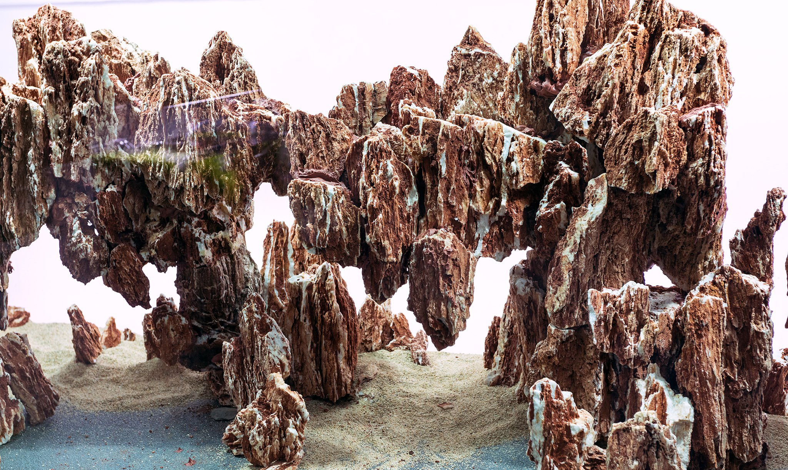

'To know Mother Nature, is to love her smallest creations.'
-Takashi Amano
A tank's hardscape is the aquarium layout composed of gravel, rocks, branches and other decor. Hardscape doesn't include the plants, which are usually added later. Every planted tank has some amount of hardscape, but what each individual might design is unique to them. Below, you'll find common styles, some design guidelines, and a gallery of tanks to inspire you.
STYLES
NATURE
IWAGUMI
DUTCH
Nature aquariums use plant and hardscape placement together to create a replica of a terrestrial landscape, such as mountains, forests, beaches, or hillsides. These aquariums use a large variety of different plants usually accompanied by rocks and branches/logs.
The Iwagumi style of aquascaping was invented and popularised by Takashi Amano. The term “Iwagumi” comes from the Japanese “rock formation”, which does a fairly good job of explaining the style. Large stones are the central focus in a scape of this style, usually complemented by one or two plants, trimmed short to mimic grass. Rocks are almost always used in an odd number, to make the scape look more natural. The plants shouldn’t overcome the rocks, and should leave plenty of open space.
The Dutch style is the oldest in the hobby, originating in the 1930s. It employs no hardscape, beyond the substrate, gravel and sand. A large selection of plants, each with different colors and leaf shapes is required for a Dutch style to excel. Instead of spreading each plant across your aquarium, plants are grouped together by type, creating depth in the scape. Each plant is a separate “terrace”, with focal points usually built around red plants.
DESIGN PRINCIPLES
Simplicity – Aquascaping is all about taste and usually, less elements is more. Very often people are tempted to incorporate as many types of plants as possible, thinking that this would ensure a great visual variety, but most of the times the result is the opposite.
Variety – Keeping it simple does not mean using one type of plant only. Even if your intention is to create a theme, you don’t want your aquascape to look boring. Remember, imagination plays a key role in aquascaping!
Proportion – It’s very important to give a sense of harmony to your tank, so try to have as much open space as filled space. Avoid using only large leaf plants because they take from the proportion and depth of your aquascape.
Focal Point – The focal point functions as an anchor for the viewer’s mind. It basically tells him where to look at first and where to go from there. Every aquascape should have a focal point. In the case of smaller tanks, there should be only one focal point and several secondary points of interest.